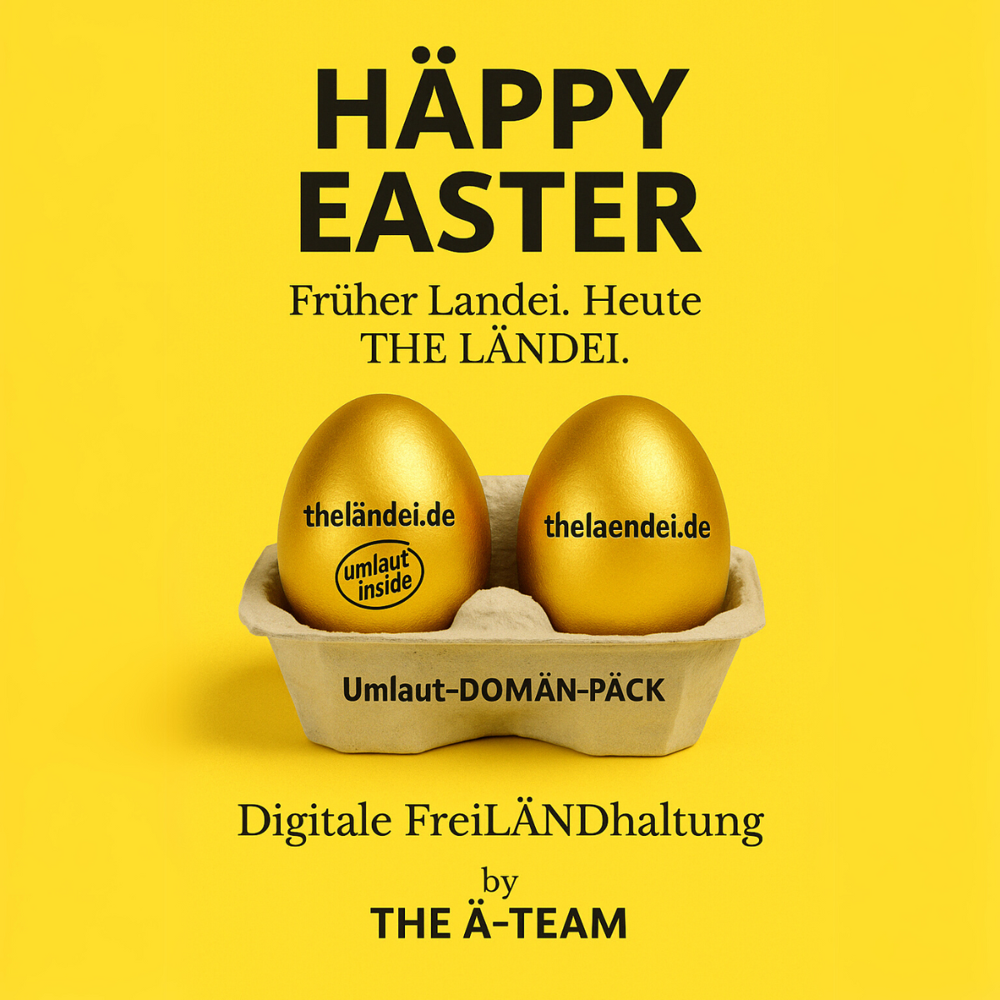

Es war einmal... eine Umlaut-Domain
Sie hieß theländei.de.
Und sie wusste: sie war anders.
Sie hatte ein Ä. Stolz und sichtbar.
Aber genau das wurde ihr zum Verhängnis.

Zwei Domains, ein Statement: Das Umlaut-DOMÄN-PÄCK #THELÄNDEI vereint theländei.de und thelaendei.de – sichtbar, markenfähig und 100 % in THE LÄND Style.
Als sie das erste Mal auf einem Bildschirm erschien, schaute der Browser sie nur an und sagte:
„Dich kann ich nicht lesen.“
Dann sperrte er sie weg.
In einen digitalen Käfig.
2003 – Die erste Befreiung
Erst Jahre später, 2003, kam der Tag der Hoffnung.
Ein kluger Mensch erfand etwas namens Punycode.
Und plötzlich konnte der Browser sie verstehen.
Die Käfigtür öffnete sich.
theländei.de war frei.
Aber niemand bemerkte es.
Niemand suchte sie.
Niemand klickte sie an.
Sie blieb allein.
Eine kurze Begegnung mit Ruhm
Dann, viele Jahre später – Ende 2021 –
wurde plötzlich ein anderer Name bekannt: THE LÄND.
Die Kampagne aus Baden-Württemberg brachte frischen Wind.
Stolz. Umlaute. Haltung.
theländ.de war überall.
Für einen kurzen Moment dachte theländei.de:
„Vielleicht werde ich jetzt gesehen.“
Und tatsächlich:
Ein Unternehmen wurde auf sie aufmerksam.
„Du klingst wie THE LÄND!“, sagten sie.
„Wir finden dich super.“
Aber dann kam wieder die alte Hürde:
„Leider bist du international nicht nutzbar.
Unsere Kundschaft versteht dein Ä nicht.“
Und so wurde sie wieder weggelegt.
Nicht gelöscht. Aber nicht genutzt.
Die Geburt des THE Ä-TEAM
Doch im Schatten von THE LÄND wuchs etwas Neues:
Ein Team von Digitalmenschen, Markendenkern und Ä-Fans.
Sie nannten sich: THE Ä-TEAM.
Sie wollten nicht länger zusehen,
wie Umlaute belächelt oder ignoriert wurden.
Sie wollten Unternehmen aus THE LÄND helfen,
sichtbarer zu werden.
Echter. Markanter. Identitätsstiftend.
Sie begannen zu recherchieren.
Und fanden heraus:
Doch es gab einen Grund:
Niemand wusste, wie man sie richtig nutzt.
Die Erkenntnis: Man braucht ein PÄCK
Und so wurde eine neue Idee geboren:
Das Umlaut-DOMÄN-PÄCK.
Zwei Domains – ein starkes Statement.
Das Team machte sich an die Arbeit.
Drei Jahre lang suchten, sicherten, sortierten sie.
Sie prüften, ob die Begriffe prägnant, einzigartig und „in THE LÄND Style“ waren.
Am Ende blieben nur etwa 1.000 wirklich taugliche Kombinationen.
Davon schafften es rund 600 ins Portfolio.
Jede davon ein Einzelstück.
Kein Massenprodukt. Kein Baukasten.
Karfreitag 2025 – Das goldene Wiedersehen
Dann kam der Tag:
Karfreitag 2025.
THE Ä-TEAM entdeckte theländei.de.
Allein. Unverknüpft.
Aber sie sahen etwas in ihr.
Sie forschten weiter – und fanden:
thelaendei.de war noch frei.
Ein perfektes Paar.
Ein echtes Umlaut-DOMÄN-PÄCK in THE LÄND Style.
Sie verbanden die beiden.
Gaben ihnen ein Zuhause.
Und zum ersten Mal in ihrem digitalen Leben
leuchtete theländei.de.
Goldgelb. Stolz. Bereit.
Heute: #THELÄNDEI und 600 weitere warten
Seitdem steht #THELÄNDEI im Nest der Möglichkeiten.
Zusammen mit über 600 weiteren PÄCKs.
Jedes ein digitales Flurstück.
Bereit, ein Unternehmen aus THE LÄND zu repräsentieren.
Bereit, auffindbar zu machen, was gesehen werden soll.
Und klar ist:
Was Unternehmen jetzt wissen sollten:
- Umlaut-Domains funktionieren.
- Transliteration ist der Schlüssel zur Internationalisierung.
- Umlaut-DOMÄN-PÄCKs schaffen Sichtbarkeit mit Identität.
- THE Ä-TEAM kuratiert, schützt und vermittelt sie – für Unternehmen aus THE LÄND.
🚀 Dein nächster Schritt:
🔍 Such Dir Dein Ei.
🎯 Werde sichtbar.
📣 Und zeig, wo Du herkommst – digital, stolz & in THE LÄND Style.